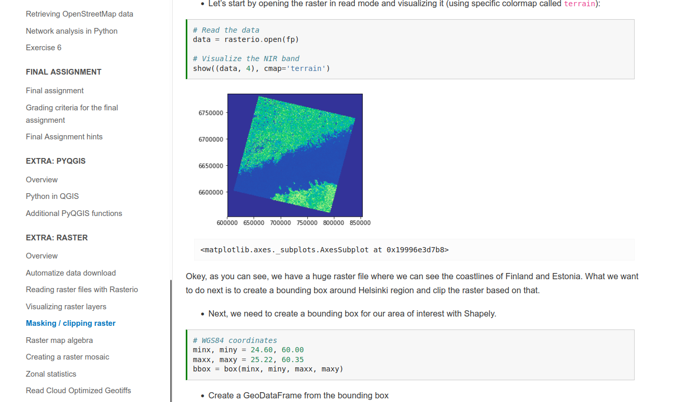

Final Assignment
Main goal:
Practice and demonstrate skillslearned in Geo-Python and AutoGIS
Course topics
| 1 | Shapely and geometric objects (points, lines and polygons) |
| 2 | Managing spatial data with Geopandas (reading and writing data, projections, table joins) |
| 3 | Geocoding and spatial queries |
| 4 | Reclassifying data, overlay analysis |
| 5 | Visualization: static and interactive maps |
| 6 | Course recap and preparing for the final assignment |
| 7 | OpenStreetMap data (osmnx) and Network analysis (networkx) |
| Extra | Raster processing (rasterio), Python in QGIS |
Learning Goals
- Test and produce modular code
- Manage spatial data programmatically
- Apply spatial analysis methods
- Create visualizations from geographic data
- Design and implement a geographical data analysis workflow
Generic Skills
- Independently search for information
- Apply new methods based on online documentation
- Critically evaluate methods and information sources
- Understand the importance of version control
- Communicate analysis workflows in written format
- Complete assingments on time
Objective of assignment:
Develop a GIS analysis workflow using Python that includes:
- Data acquisition
Reading data from files or online sources (20 points) - Data analysis
Enriching and analyzing the data, e.g., spatial join, overlay, buffering, etc. (20 points) - Visualization
Visualizing the results as maps and graphs (20 points)
10 points for overall documentation of the work
Extra points available for other merits in the work
Structure
- The final work will be a set of Jupyter Notebook files (.ipynb) and/or Python script files (.py)
- The README (.md) should contain all relevant information about the work, including links to all files
- Remember to use informative variable names, inline comments, docstrings etc.
- IF you are using large input files, DON’T upload them to GitHub! You can provide sample data for demonstrating your workflow, and/or download instructions for the whole data set.
Two deadlines:
60 % of course grade
- 1st deadline: 31st December 2021
- 2nd deadline: 16th January 2022
60 % of course grade
Topics
Access viz
Objective: Create a Python tool (i.e. a set of Notebooks and/or Python script files) for managing, analyzing and visualizing the Travel Time Matrix data set. AccessViz consist of Python functions, and examples on how to use these functions.
Contents: four main components for accessing the files, joining the attribute information to spatial data, visualizing the data and comparing different travel modes:
+ four other optional components
Contents: four main components for accessing the files, joining the attribute information to spatial data, visualizing the data and comparing different travel modes:
- FileFinder
- TableJoiner
- Visualizer
- Comparison tool
+ four other optional components
Urban indicators
Objective: Develop an urban analytics tool and apply it to at least two cities or neighborhoods(e.g., Helsinki and Tampere, or neighborhood areas in Helsinki).
The main idea is to calculate a set of metrics /indicators based on the urban form and/or population, and to compare the cities/regions based on these measures.
Contents: You should use 2-4 different indicators, for example some of these:
The main idea is to calculate a set of metrics /indicators based on the urban form and/or population, and to compare the cities/regions based on these measures.
Contents: You should use 2-4 different indicators, for example some of these:
- Population distribution and demographics
- Urban population growth
- Accessibility
- Green area index
- Street network metrics
- Building density
Your own topic
Objective: Develop your own topic! In general, your own topic should also contain these sections:
But feel free to be creative! Your own project might be, for example, related to your thesis or work project. Remember to describe clearly what you are doing in the final assignment repository README.md -file.
Preferably, present your idea to the course instructors before the winter holidays
- Data acquisition Fetching data, subsetting data, storing intermediate outputs etc.
- Data analysis Enriching and analyzing data, eg. spatial join, overlay, buffer, etc.
- Visualization Maps and graphs
But feel free to be creative! Your own project might be, for example, related to your thesis or work project. Remember to describe clearly what you are doing in the final assignment repository README.md -file.
Preferably, present your idea to the course instructors before the winter holidays
Tips and tricks
Best practices in programming from Wilson et al. (2014)
- Write programs for people, not computers.
- Let the computer do the work.
- Make incremental changes.
- Don't repeat yourself (or others).
- Plan for mistakes.
- Optimize software only after it works correctly.
- Document design and purpose, not mechanics.
- Collaborate
Checklist
- Is the overall aim and structure of the submission is clearly documented in the README.md file?
- Is the documentation of the analysis process and related functions clear (docstrings, comments, markdown texts readme)?
- Are there visualizations? At least a single map should be in place, after all, this is a GIS course!
- Does the code work? Does the code work with different inputs?
- Does the code avoid unnecessary repetition (e.g. by using functions and for-loops)?
- Is the extent of the work sufficient? (consider that the final work replaces an exam!
Additional Resources
Raster Data Processing
 Raster lessonOnline Resources
MovingPandas for analysing trajectories:
github.com/anitagraser/movingpandas
anitagraser.com/2019/09/11/movement-data-in-gis-24-movingpandas-hands-on-tutorials
Plotly express for interactive maps:
plot.ly/python/plotly-express
plot.ly/python/maps
Raster data visualization using datashader:
datashader.org/user_guide/Geography.html